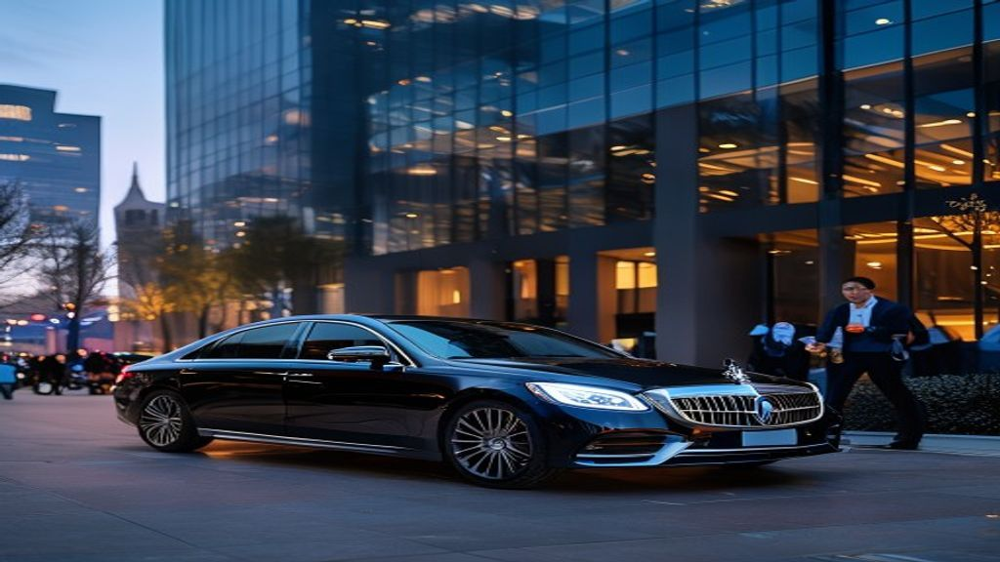

Booking Chicago transportation for the ASCO 2026 Annual Meeting at McCormick Place starts months before the convention — and finishes well before walk-up bookings become impossible. We accept reservations for flat-rate black car transfers, hourly charters covering investor breakfasts and partner dinners, and Sprinter vans for pharma delegations of eight to fourteen.

The American Society of Clinical Oncology (ASCO) Annual Meeting returns to Chicago from May 29 through June 2, 2026, drawing more than 40,000 oncology professionals, pharmaceutical executives, biotech leaders, and clinical researchers to McCormick Place. With back-to-back sessions, satellite symposia, investor dinners, and partner meetings, ASCO week is one of the most logistically demanding weeks on the Chicago calendar. Reliable, professional transportation is not a luxury during ASCO — it is a competitive advantage. Our ASCO Annual Meeting Chicago limo are built specifically for the cadence and expectations of the convention.
Why ASCO Week Demands a Specialist Transportation Partner
ASCO is unlike a standard corporate trip. Schedules are fluid, hotel inventory across the Loop and South Loop is fully booked, McCormick Place security perimeters expand, and Lake Shore Drive backs up unpredictably. Standard rideshare apps surge aggressively during peak windows, drivers unfamiliar with the convention rarely know which entrance to use, and a missed pickup can mean missing an investor meeting that took six months to confirm. Our chauffeurs work ASCO every year. They know which hotels load from the side entrance, which drop-off lane at McCormick Place is fastest, and which surface streets stay moving when LSD is jammed.
Airport Transfers from O'Hare and Midway
The vast majority of ASCO attendees arrive through O'Hare International, with a meaningful share coming through Midway. Our chauffeured airport transfers track your flight in real time so a delayed inbound never costs you an idle car or a missed greeting. Our standard ASCO airport package includes meet-and-greet at baggage claim, luggage assistance, bottled water, Wi-Fi-equipped vehicles, and direct routing to your downtown or South Loop hotel. For pharma teams arriving together on the same inbound, we coordinate convoy pickups so the entire delegation moves as one.
Hotel-to-McCormick Place Daily Service
The bulk of ASCO transportation demand is the daily run from hotel to McCormick Place and back. Hotels along Michigan Avenue, the Loop, and the South Loop all face the same morning bottleneck. We offer scheduled daily black car service with a confirmed pickup window, meaning you walk out of your hotel and into a waiting executive sedan or SUV — no apps, no surge pricing, no waiting in a hotel rideshare queue. Our chauffeurs use the McCormick Place North entrance, South entrance, or West loading area depending on which hall your sessions are in.
Hourly Charters for Investor and Partner Meetings
The most valuable hours of ASCO often happen outside the convention center — investor breakfasts at the Four Seasons, partner lunches at Gibson's, advisory board dinners at Spiaggia, and after-dinner drinks at the Aviary. Our hourly black car service gives you a dedicated chauffeur and vehicle on standby for the entire block of meetings. You don't rebook between stops, you don't worry about your car finding you, and you don't watch the clock during a critical conversation. Most ASCO clients book a six- to ten-hour daily charter to cover their full meeting circuit.
Group and Delegation Transportation
Pharmaceutical and biotech teams typically attend ASCO as delegations of six to twenty people. We operate a fleet of executive SUVs, premium sprinter vans, and stretch limousines that move teams together comfortably. For sponsor and exhibitor teams running booth duty, we coordinate staggered shuttle service between hotel and McCormick Place so your booth never goes uncovered. For pharma marketing teams hosting key opinion leaders or speakers, we provide white-glove transportation that reflects the level of relationship you are investing in.
Premium Vehicles Built for the ASCO Standard
Every vehicle in our ASCO fleet is late-model, fully detailed, and equipped with leather seating, climate control, complimentary water, phone chargers, and Wi-Fi. Our executive sedans are ideal for one or two passengers traveling between meetings. Our luxury SUVs accommodate three to six passengers with luggage. Our sprinter vans seat up to fourteen comfortably for delegation moves. And our stretch limousines provide standout arrival for hosted dinners and key client experiences.
Chauffeurs Trained for Pharma and Healthcare Clients
Our chauffeurs are not generic drivers. They are screened, professionally trained, dressed in business attire, and briefed on the discretion expected by pharma, biotech, and healthcare clients. Conversations stay confidential. Vehicle interiors stay quiet. Routes are planned in advance. Time-sensitive pickups are honored to the minute. For executives who are accustomed to corporate car service back home, our chauffeurs are an immediate and natural fit.
Transparent ASCO Pricing — No Surge, No Surprises
One of the persistent frustrations of using rideshare during ASCO is the unpredictable surge pricing during peak windows — which is exactly when you need the ride. Our ASCO transportation is booked at flat, transparent rates for airport transfers and clear hourly rates for charters. You receive a confirmed quote before the ride, you know exactly what each leg of your week will cost, and your finance team gets a single consolidated invoice at the end of the convention. Call us at 312-448-8787 to request an ASCO group rate sheet.
Booking Window for ASCO 2026
ASCO week books out completely. Hotels were sold out months in advance, and ground transportation follows the same pattern. We accept ASCO 2026 reservations from now through the start of the convention, but we cap inventory to protect service quality. Pharma teams and groups of five or more should reserve at least eight weeks in advance. Individual executives and small teams should aim for at least four weeks.
Reserve Your ASCO 2026 Transportation
Whether you are a pharma executive flying in for a single day of meetings, a biotech team running a satellite symposium, an investor with a packed dinner schedule, or an exhibitor managing booth logistics, we have an ASCO transportation package built for you. Book ASCO Annual Meeting limo or call us directly at 312-448-8787 to lock in your ASCO 2026 rides.